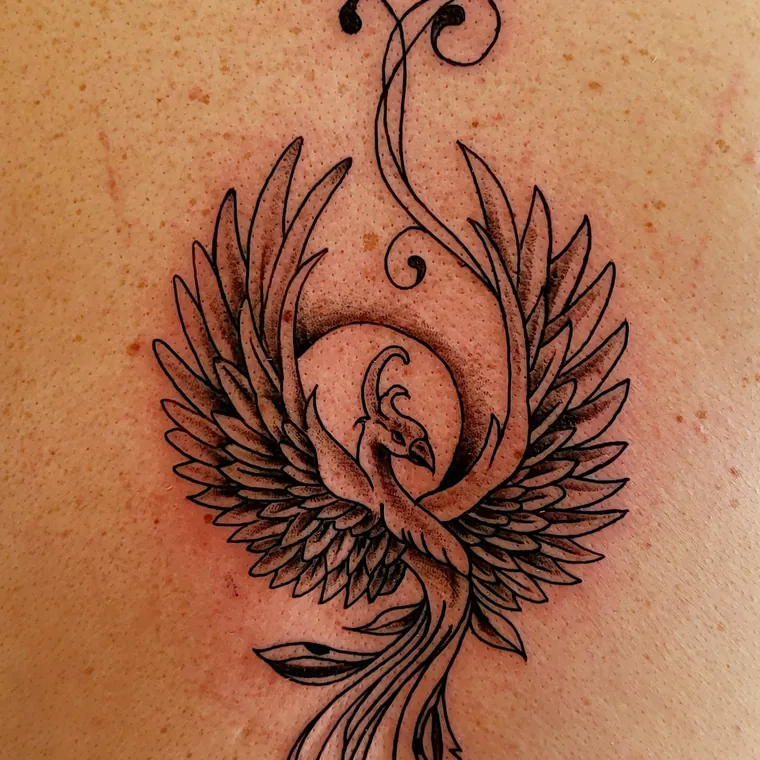

The artist
The barber is the tattooist
José Luis does both, in the same rooms, on the same day if the diary allows. Customers who came in for a fade end up booking a piece, which is the whole reason this shop is two trades under one badge. Every piece starts with a consultation, and the consultation is free.
The list
Priced by size, not by the hour
The work
Left this room
Drag sideways.



4.8 from 225 on Google
What they actually wrote
"Quick, clean, and he captured exactly what we had in mind. We called him in the morning and had our tattoo by the afternoon."
Adriana Hernandez
"If you want a tattoo, a haircut, or eyebrow shaping, there is no place more magical. José Luis is a highly skilled professional."
Cristina
"I got my lips done and a tattoo, and it truly exceeded my expectations. The tattoo turned out perfectly, just as I wanted."
Yannely De Los Santos Vilaseca
Getting there
Nuselská 133/134, Prague 4
Bring a reference, a rough idea, or nothing at all. The consultation sets the size, the size sets the price, and the price does not move afterwards.